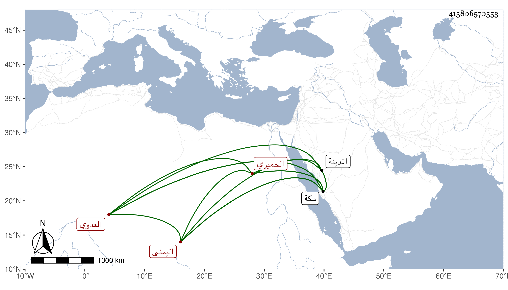

0902Sakhawi.DawLamic.ITO20230111-ara1.EIS1600.415806570553
Biography ID: 415806570553
496
عيسى بن عوضة بن أحمد بن موسى بن مسعود الحميري من قبيلة بني مكرم الشاحذي اليمني العدوي نزيل مكة والدلال بها . ولد تقريبا سنة أربعين وقرأ القرآن بزاوية داود الحكمي وعادت بركته عليه وذكر من كراماته الكثير ، وقدم مكة في سنة ثلاث وستين فقرأ في الفقه على ابن عطيف والمحب بن أبي السعادات وأبي السعادات بن الإمام الطبري وحضر عند الجوجري والعميري وغيرهما من الفضلاء والوعاظ وجود القرآن على صالح المرشدي وانتفع فيه وفي الشاطبية بأحمد الزبيدي وأخذ عنه في النحو ، وسمع مني بمكة في مجاورتي الثالثة والرابعة وقرأ علي فيها البخاري بكماله ولازمني ، كذا قرأه على عبد الله الشامي أحد الآخذين عني وكتبت له إجازة في كراسة ، ويحفظ كثيرا من السيرة النبوية والمتون وغير ذلك وصار ذا عيال وأولاد يجتهد في القيام عليهن وربما غسل الأموات وزار المدينة .
